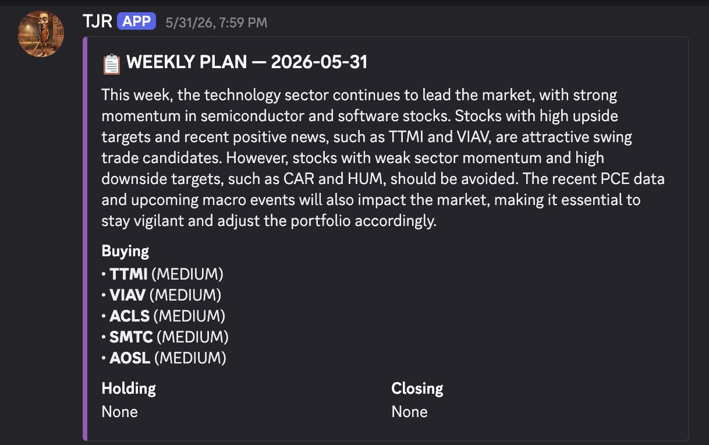

Claude Trading Agent
Problem
Active swing trading demands constant screening, sentiment reading, and disciplined execution, work that is easy to do inconsistently by hand. This agent automates the full loop so that a systematic strategy runs unattended.
What it does
Scans 254 large-cap stocks weekly for trend (60-day relative strength vs. SPY) and dip signals, layers in news and social sentiment, then places risk-managed orders on Alpaca and posts P&L to Discord. The entire system runs on scheduled GitHub Actions. No server.
Stack
Python · alpaca-py · pandas · numpy · Groq (Llama 3.3 70B) · Claude · Alpaca News API · Stocktwits & Reddit sentiment · GitHub Actions · Discord webhooks
Process & reflection
I split the bot into a clear pipeline
(research → analyze → execute → monitor)
so each stage could be tested on its own. The hardest part was
that GitHub Actions runs are stateless: every run starts cold,
with no memory of open positions. I solved it by persisting trade
history and portfolio snapshots to memory.json and
enforcing risk rules (5% stops, at most three positions at 20% each)
on every wake-up, which made unattended execution reliable.
View code: position sizing
# risk.py: fixed-fractional position sizing with a hard cap
MAX_POSITIONS = 3 # never hold more than three names at once
ALLOCATION = 0.20 # commit 20% of equity per position
STOP_LOSS = 0.05 # 5% protective stop on every entry
def size_order(equity: float, price: float, open_positions: int) -> int:
"""Return whole-share count for a new entry, or 0 if we're at capacity."""
if open_positions >= MAX_POSITIONS:
return 0 # respect the concurrency cap
dollars = equity * ALLOCATION # dollars allotted to this trade
return int(dollars // price) # brokers fill whole shares only
Representative logic. Full source on GitHub.
View screenshot
